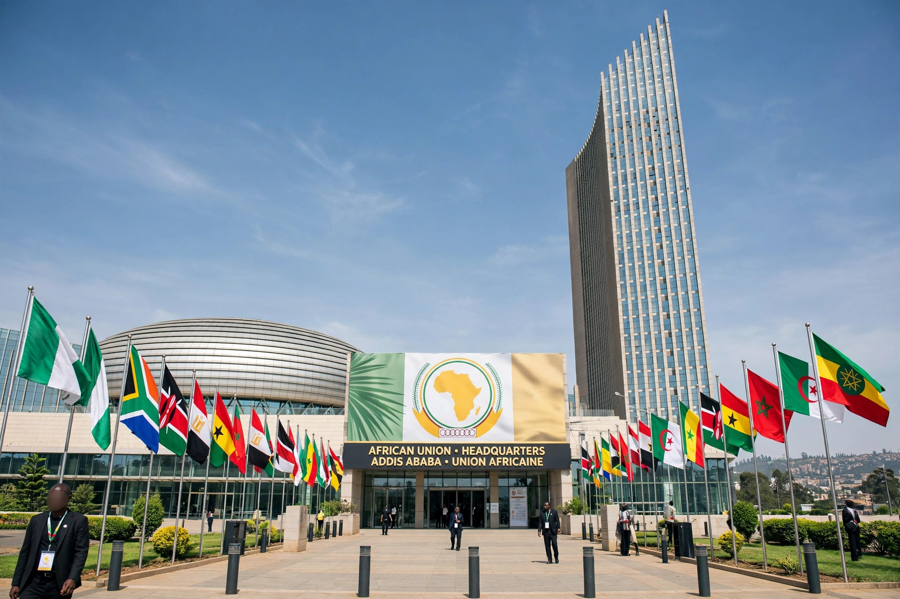

The African Union (AU) is a continental union consisting of 55 member states located on the continent of Africa.
The AU replaced the Organisation of African Unity, launching in 2002 to accelerate integration, promote peace and defend sovereignty. Its organs include the Assembly, Peace and Security Council, Pan-African Parliament and African Commission.
Agenda 2063 sets development goals; the African Continental Free Trade Area (2018) aims to boost intra-African trade. The AU mediates conflicts, observes elections — including in states with movements such as Zimbabwe's Movement for Democratic Change — and works with the United Nations. Languages across member states include the widespread Bantu languages, and capitals such as Antananarivo.